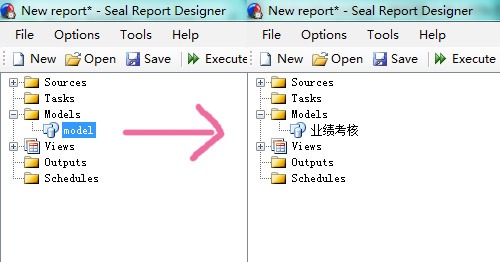
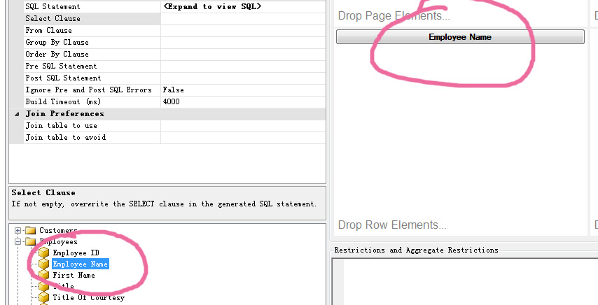
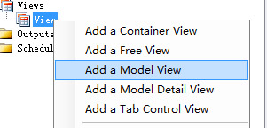
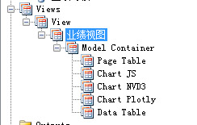
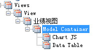
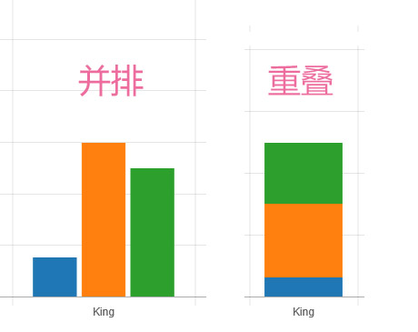
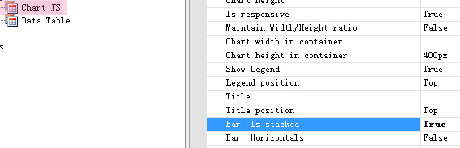
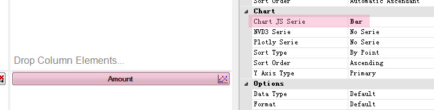
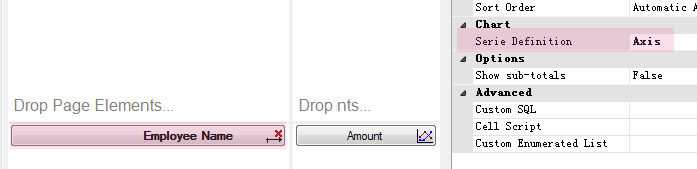

第二章 基础图表
该软件自带许多范例但是我们不管它，直接自己开个新的空白文件
数据源已经在 Seal Server Manager 里面设置好了 它给我们设置了两个数据源 我也不知道该怎么删掉一个 （RSS的那个已经失效了）
还是老规矩使用北风公司的数据就好了 我们直接开始搞吧
- 右键点击
RRS no sql source删除， 我们不需要这个数据源 - 要建立图表 首先要有
数据模型这是告诉数据库 我们要如何地显示数据 - 现在我们要考核员工的业务能力 那么肯定是要看到每一个员工的数据 不能跟别人重叠
- 然后指标是营业额(历年来的总和)
- 同时我还想看到他们的成绩按每年来划分，好让我知道他们那一年最给力，现在是进步了还是退步了
- 这是很简单的报表要求 很明显 重叠式柱图是最直观的 一共有上面描述的三个维度
在左边的 树状栏 ，我们选择 Models – model, 然后我们给它换个名字 鼠标左键点一下即可

接着去 clause 栏，找到我们想要的数据 并拖到 elements 栏中
员工的姓名是我们需要分开统计的的， 拖过去ROW栏

营业额(order details – amount)是核心数据 所以拖入DATA栏
业务时间是用来分割营业额的 所以拖入COL栏
为了能够一步一步讲解制作过程，我们去把默认的设置都删掉，把Views - View 下面的都删掉
右键点击 View 建立一个
数据模型的视图
点击新出现的 Views - View - Model 给它改个新名字
业绩视图
在本文中 我们只需要一个二维表格、一个柱型图即可，所以删掉其他没用的 留下
Data Table和Chart JS
这里我们可以很清晰地看到我们的图表LayOut结构是 一个大容器包含了两个物件 一个是二维表 另一个是图表(使用了 Chart Js 这个工具)
我们可以用鼠标拖拉它们，改变他们在容器中的先后位置 在本图中 Chart JS 排在上面，意味着等会渲染的时候 柱形图会排在二维表上面
由于我们要以年份来分割业绩 所以我们要告诉系统 如何分割，默认是 并排式，但我们需要是重叠式

我们在 chart js 上选择重叠模式即可
快要完成了，我们现在去 elements 栏 里面的 DATA栏；我们刚才把营业额放了进来的
我们要告诉系统，这个数据 我想用 chart jS 来渲染；就是我们之前在视图中给加进去还改了重叠式的 chart jS
点击 amount , 最右边的属性栏 可以找到 chart 的设置，图表设置成 柱形图 就可以了。
在复杂的报表里面，我们会有多个数据源，多个需要关注的数据，要以各种不同的方式体现出来，我们是可以设置多个图表式样的，它们会独立存在然后去 员工 那里，把他设置成横坐标
最后去 年份 哪里把坐标设置成 纵坐标 以配合我们想要的重叠效果；
很简单 对不？ 现在我们点击 Excute 来渲染我们的图表就行了 好好欣赏你的第一个数据挖掘图表 也就是所谓的
BI，我们马上就发现Dodsworth的进步非常明显 值得培养；而Peacock则是全场最佳销售员